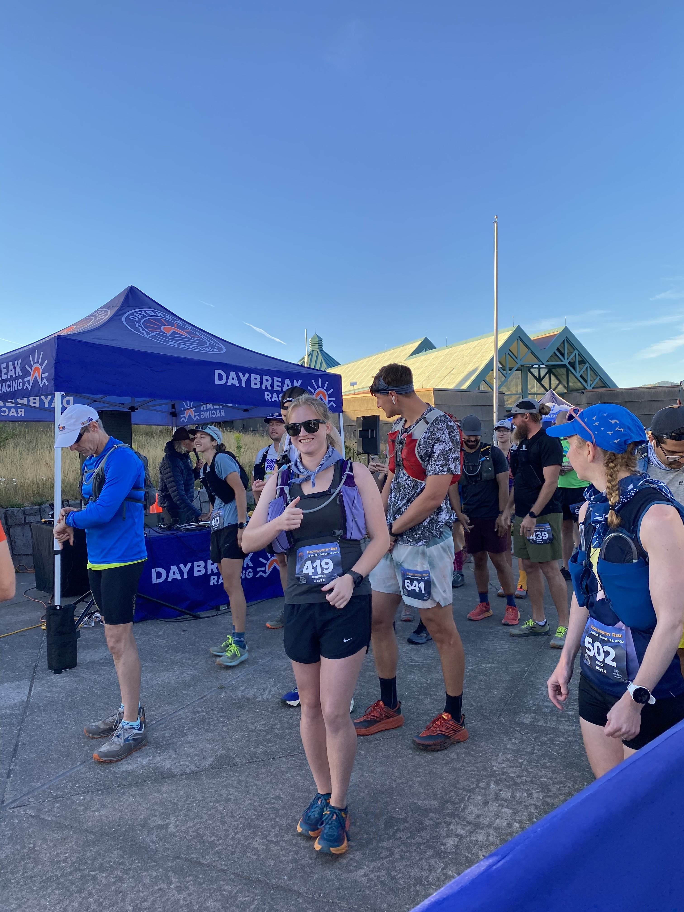
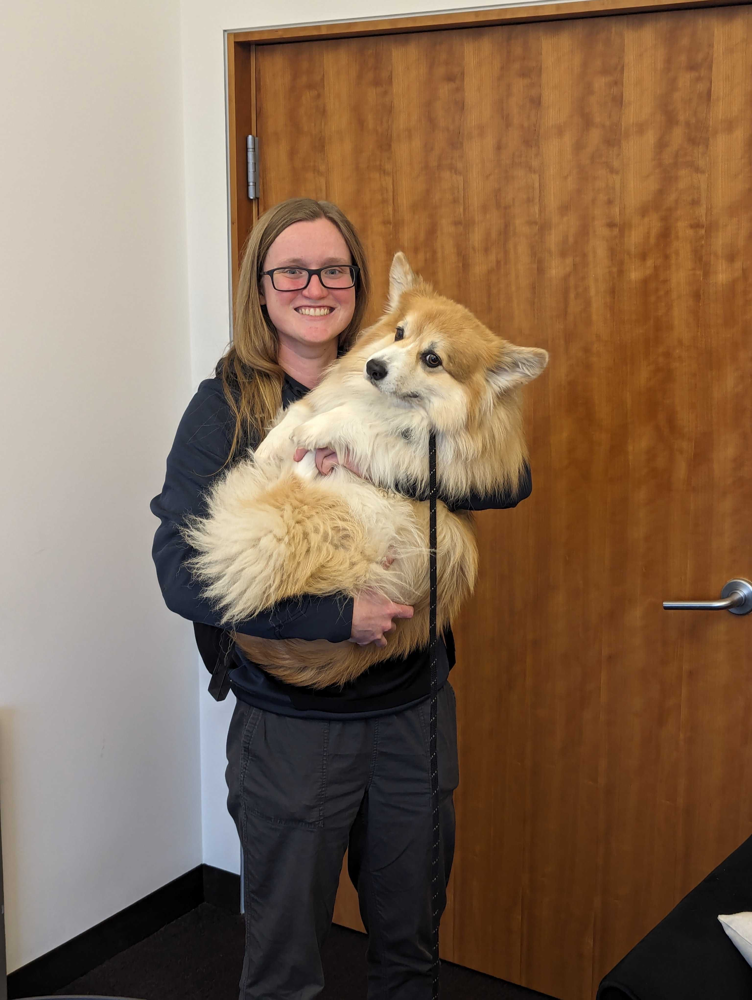
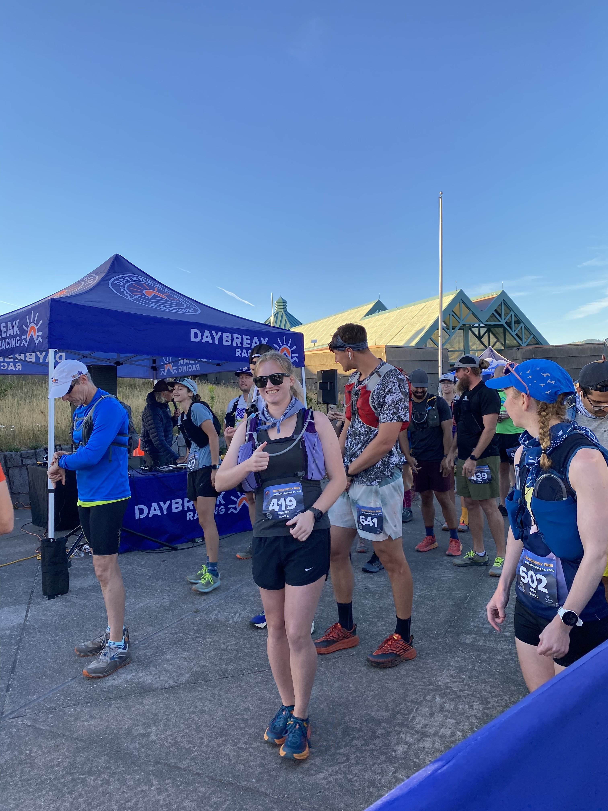
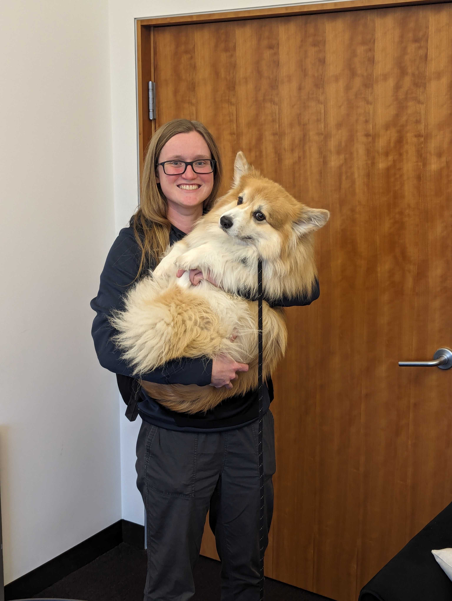

Jennifer Brana
I am a PhD student in the Computer Science Department at Carnegie Mellon University. I am advised by Professor Nathan Beckmann and a member of the CORGi research group and the Parallel Data Lab. I am supported by a NSF Graduate Research Fellowship (NSFGRFP).
I am interested in the design and optimization of highly parallel computer architectures. My research focuses on performance analysis and scheduling mechanisms for parallel architectures such as general-purpose spatial dataflow architectures.
I did my undergrad in computer science and computer engineering at the University of Portland. During my undergrad, I worked with Nathan Beckmann at Carnegie Mellon University as part of REUSE. In the past, I've work on near-data processing at AMD Research and at CMU through my work on Polymorphic Cache Hierarchies.


 


